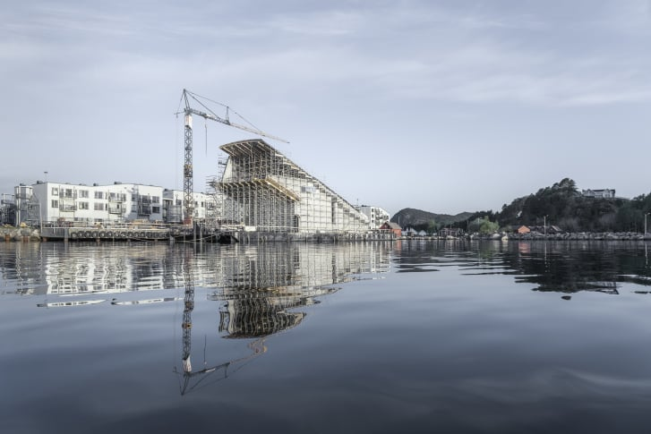

World's largest underwater restaurant nears completion
Five meters below the surface of the North Sea, near the southernmost tip of Norway, Europe's first underwater restaurant is nearing completion. The 110-foot long structure, an oblique concrete slab that looks like a sunken periscope, was submerged in July 2018 and work is now underway to complete the interiors, in anticipation of the public opening in spring 2019.
The restaurant, called Under, is the design of Norwegian outfit Snøhetta, which has made a name for itself with projects such as the Bibliotheca Alexandrina in Egypt, the Oslo Opera House, the National September 11 Memorial Pavilion and the renovation of Times Square in New York.
When finished, the structure will accommodate about 100 guests with a total internal area of about 500 square meters (5,300 square feet) set over three levels, offering unique underwater views of the surrounding marine environment through a 11-meter (36 feet) wide panoramic window.
Under goes under
The restaurant was built in about six months on a barge near the coast, then towed into position -- about 600 feet away -- with a heavy-lift vessel. To submerge the structure, containers filled with water were placed inside, before securing it to the sea floor with a total of 18 anchoring points.